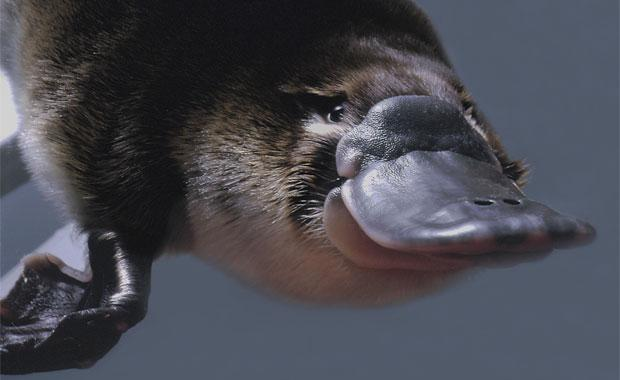

The koala (Phascolarctos cinereus, or, inaccurately, koala bear[a]) is an arboreal herbivorous marsupial native to Australia. It is the only extant representative of the family Phascolarctidae and its closest living relatives are the wombats. The koala is found in coastal areas of the mainland's eastern and southern regions, inhabiting Queensland, New South Wales, Victoria, and South Australia. It is easily recognisable by its stout, tailless body and large head with round, fluffy ears and large, spoon-shaped nose. The koala has a body length of 60–85 cm (24–33 in) and weighs 4–15 kg (9–33 lb). Pelage colour ranges from silver grey to chocolate brown. Koalas from the northern populations are typically smaller and lighter in colour than their counterparts further south. These populations possibly are separate subspecies, but this is disputed.

The platypus (Ornithorhynchus anatinus), sometimes referred to as the duck-billed platypus, is a semiaquatic egg-laying mammal endemic to eastern Australia, including Tasmania. Together with the four species of echidna, it is one of the five extant species of monotremes, the only mammals that lay eggs instead of giving birth. The animal is the sole living representative of its family (Ornithorhynchidae) and genus (Ornithorhynchus), though a number of related species have been found in the fossil record. The first preserved platypus body was thought to have been a fake, made of several animals sewn together,[3] when it was first looked at by scientists in 1799.[4]
The kangaroo is a marsupial from the family Macropodidae (macropods, meaning "large foot"). In common use the term is used to describe the largest species from this family, especially those of the genus Macropus: the red kangaroo, antilopine kangaroo, eastern grey kangaroo, and western grey kangaroo.[1] Kangaroos are endemic to Australia. The Australian government estimates that 34.3 million kangaroos lived within the commercial harvest areas of Australia in 2011, up from 25.1 million one year earlier.[2]